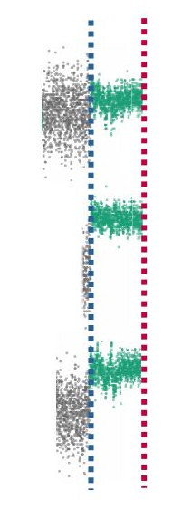
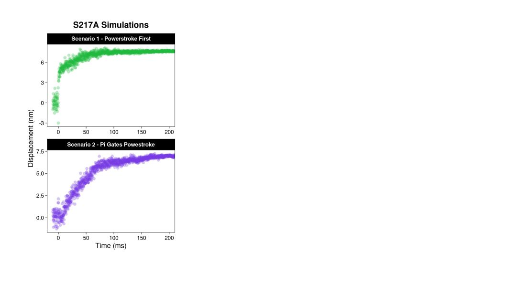
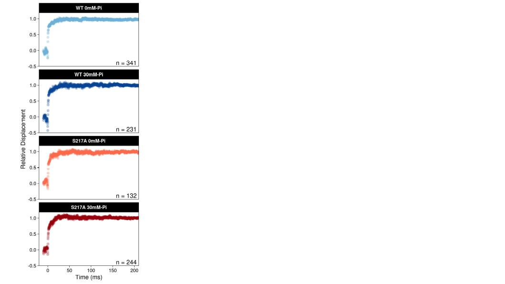
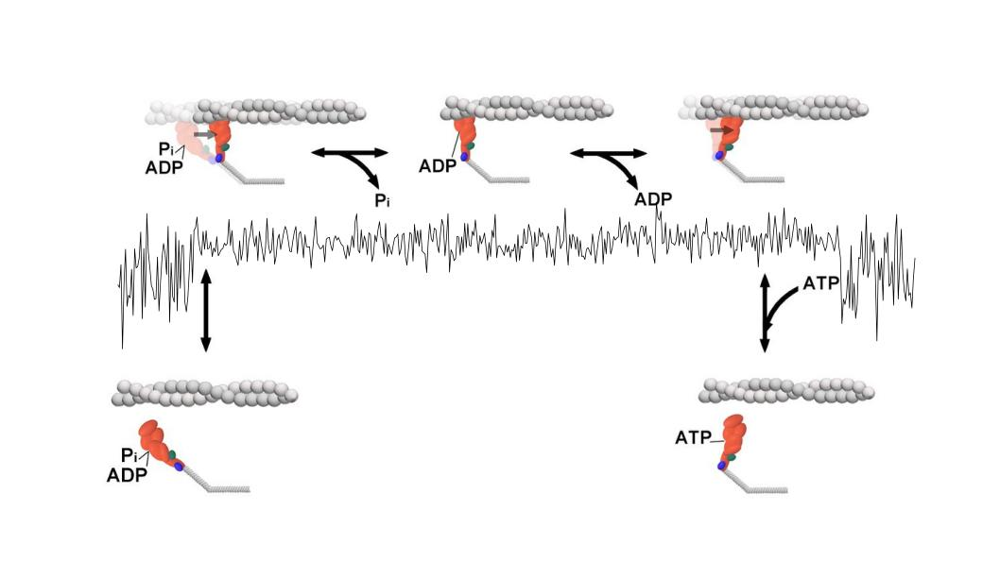
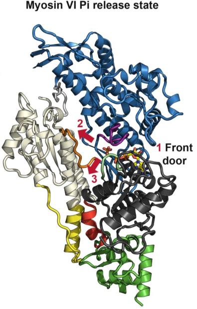
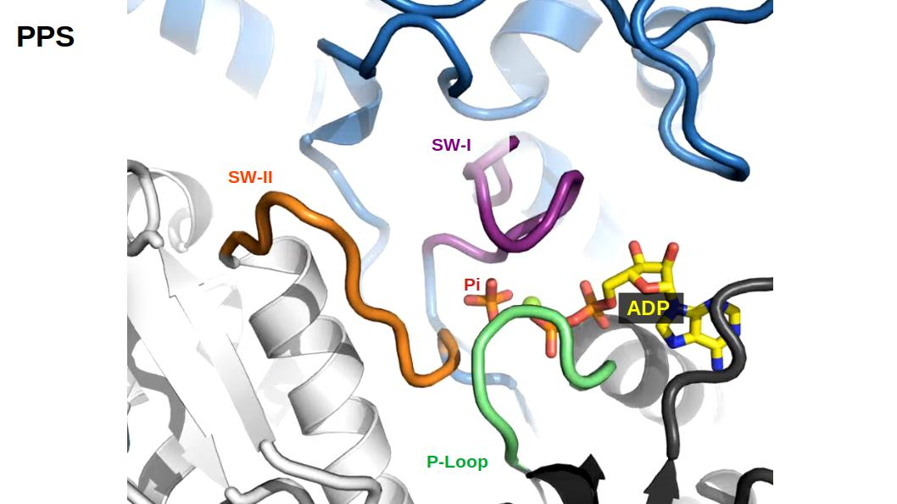
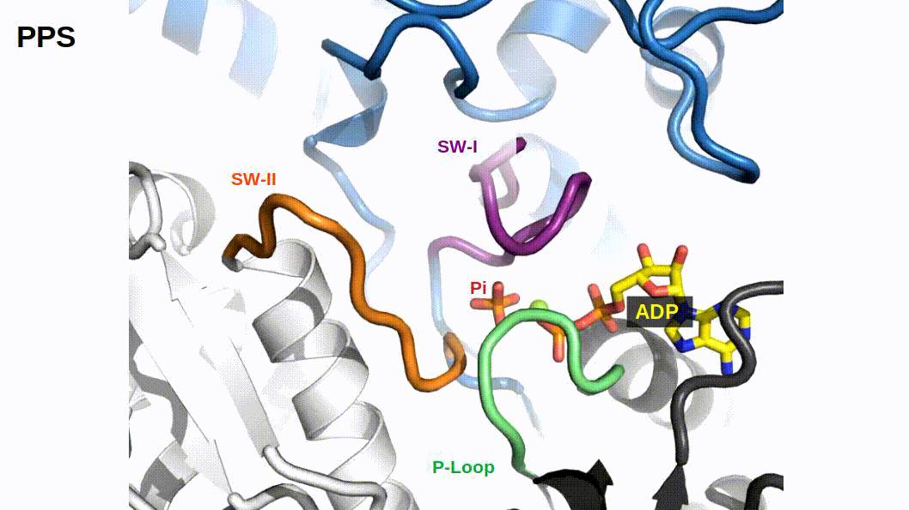
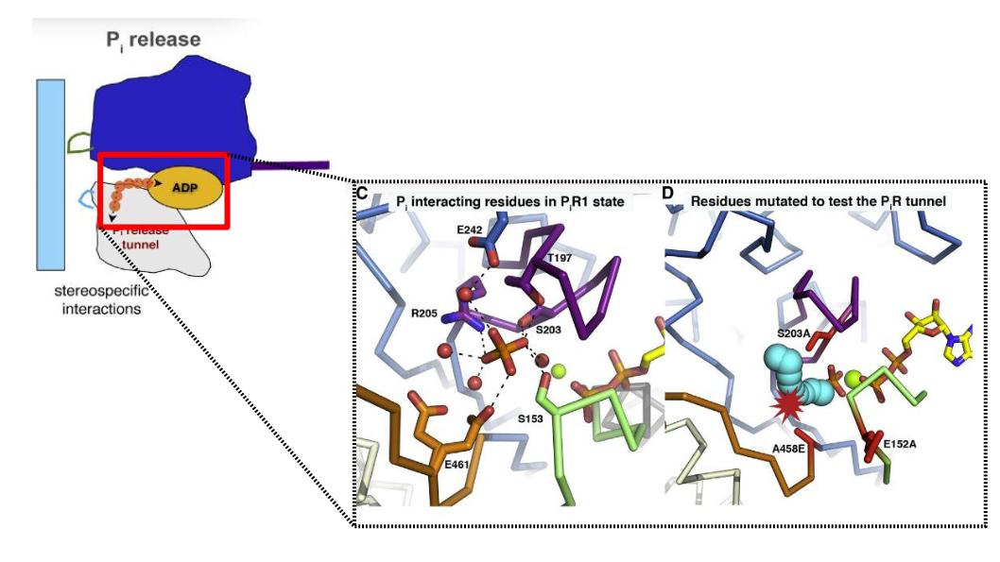
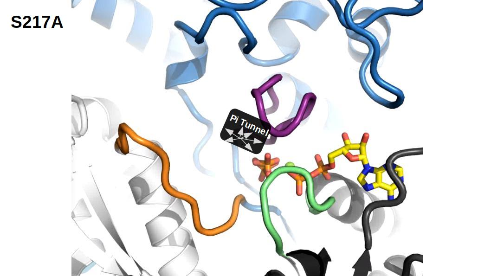
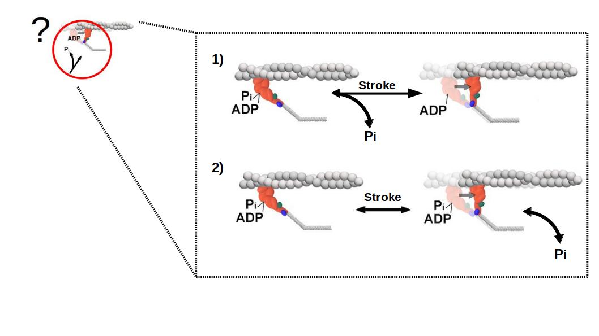

Myosin’s Powerstroke Occurs with Phosphate Still in the Active Site
Brent Scott1, Christopher Marang1, Laura K. Gunther2, Mike Woodward1, Christopher M. Yengo2, and Edward P. Debold1
Muscle Biophysics Lab, Department of Kinesiology, University of Massachusetts, Amherst, Massachusetts, USA1
Department of Cellular and Molecular Physiology, Pennsylvania State College of Medicine, Hershey, Pennsylvania,USA2
???
At the core of force production is the mechanochemical system that is myosin’s cross bridge cycle. Here is a basic model…When myosin binds actin it shows myosin going through the powerstroke and releasing Pi in one step and then releasing ADP and binding a new ATP
—
class: center, middle
# Myosin’s Cross-Bridge Cycle
<img src = “images/xb-q.jpg”, style = “width: 90%”>
???
However, the timing or sequence of the powerstroke and pi release is unclear - a classic chicken and the egg conundrum
—
# Two Scenarios
.left-column[
### .center[WT has a similiar displacement in both 0mM-Pi and 30mM-Pi]
# Results - Is the displacement reduced?
.center[
]
Results - Is the displacement reduced?
.center[
]
—
# Results - Is the displacement reduced?
.center[
]
–
.center[### Likely no reduction in magnitude of displacement in S217A]
—
# What is rate of transition between unbound to bound?
##.center[Ensemble Average]
What is rate of transition between unbound to bound?
Ensemble Average

—
S217A Simulations - What should we observe?
Data simulated with a slowed Pi release (30 s-1)

S217A Simulations - What should we observe?
Data simulated with a slowed Pi release (30 s-1)
Results - Is the rate of transition between unbound/bound reduced?

Results - No change in transition rate
Results - All conditions are identical to Powerstroke First Simulation
Conclusions
In high [Pi] and with the S217A mutation - myosin produced a displacement
–
There was no change in the rate of transition between unbound/bound
–
Data are consistent with a model where the powerstroke preceeds Pi-release

class: inverse
# Acknowledgements
Debold Lab
Ned Debold, PhD
Chris Marang, MS
Mike Woodward, MS
Open Source Software
R/R Studio/R Community
Linux/Ubuntu
Yengo Lab
Chris Yengo, PhD
Laura Gunther, PhD
The Scott Fam
Megan
Marilyn (3)
Mollie (2)
Anna (3 mo.)
Pi is released through the backdoor
.pull-left[
.center[]]
.pull-right[
.center[]]
.footnote[Llinas et al. 2015]
—
class: center
# Pi is released through the backdoor

—
class: center
# Pi is released through the backdoor

—
# S217A blocks entry of Pi into the release tunnel
.left-column[
#### 10-fold slower Pi-release (Forgacs et al. 2009)
#### Disrupts PiR2 to PiR1 transition]

—
# S217A has a slow Pi-release
.pull-left[
### k-p = 198 s-1]
.pull-right[

### k-p = 16 s-1]
.footnote[Forgacs 2009, Llinas 2015]
—
—
# possible skip Two Scenarios & A Testable Hypothesis
.left-column[
Stroke occurs before Pi-release
Pi-release gates the powerstroke
]

How can we increase the probability of Pi being in the active site?


 ]
] ]
] ]
—
# Results - Is the displacement reduced?
.center[
]
—
# Results - Is the displacement reduced?
.center[ ]
–
.center[### Likely no reduction in magnitude of displacement in S217A]
—
# What is rate of transition between unbound to bound?
##.center[Ensemble Average]
]
–
.center[### Likely no reduction in magnitude of displacement in S217A]
—
# What is rate of transition between unbound to bound?
##.center[Ensemble Average]